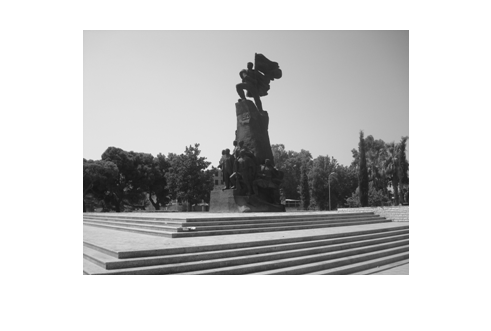
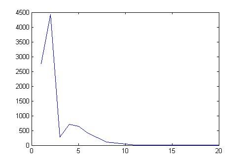

Contents
clc; clear;
LOADING IMAGE FOR SEGMENTATION
I=imread('valona.bmp');
I=rgb2gray(I);
imshow(I);
 IMAGE CONVERTION IN DATASET REPRESENTATION
[X Y Z]=find(I);
CLUSTERING WITH K-MEANS
DS=double([X';Y';Z']); K=5; [IDC,SUB]=kmeansClustering(DS,K); plot(SUB);
RECOSTRUCTING THE IMAGE
IC=sparse(DS(1,:),DS(2,:),IDC*20); IC=full(IC); IC=uint8(IC); imshow(IC);